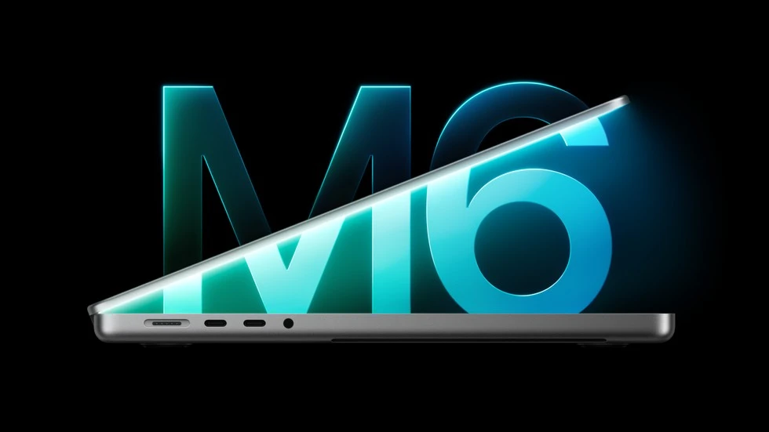

Apple · Field note 056
M6 brings faster graphics and Wi-Fi 7 to the 14-inch MacBook Pro
Apple announced the laptop on October 27; pre-orders open October 28 ahead of a November 6 release.

Apple announced its M6-powered 14-inch MacBook Pro on October 27, 2026, pairing a 12-core CPU with a 12-core GPU and upgraded wireless connectivity.
Apple claims up to 30 percent faster graphics than M5 and up to 24 hours of battery life. Those are manufacturer test results, rather than CORE’s own measurements.
The laptop includes Wi-Fi 7, Bluetooth 6, a Liquid Retina XDR display with an optional nano-texture finish, and a 12MP Center Stage camera. Standard unified memory is 16GB, configurable to 32GB.
Space black and silver models start at $1,999 in the U.S., or $1,899 with education pricing. Pre-orders begin October 28, with deliveries and retail availability starting November 6.
This announcement concerns the M6 14-inch model. It does not establish the OLED touchscreen specifications discussed in earlier reports.